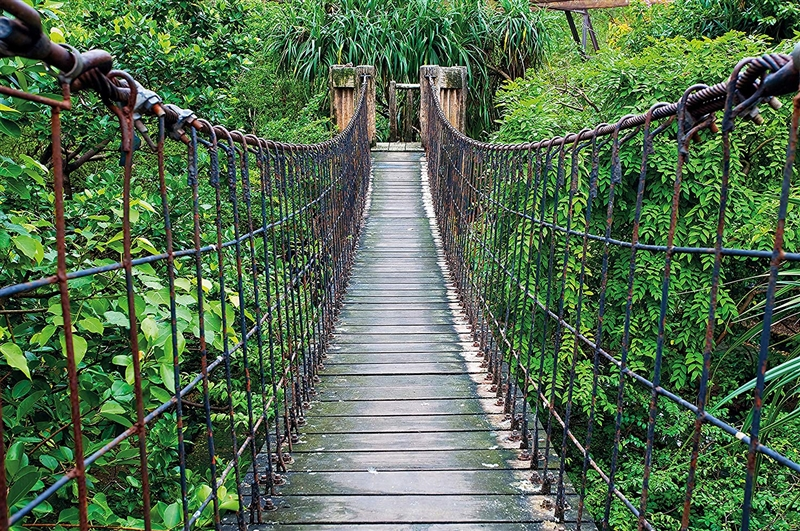

COVID- 19!
We are currently not engaging in any activities due to the outbreak of the deadly covid-19 coronavirus. We urge you all to stay safe and do as you are told to stop the spread. We will resume our activities in a short while. We may have our first activity on October 5 2020. We need you alive so stay safe!
